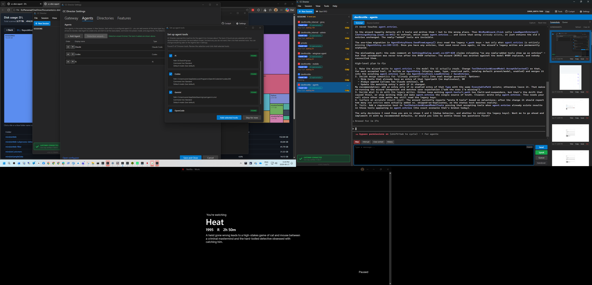

Branch: issue-513-batch-whisper-transport | Role: Developer Agent (CenCon)
transport=batch but model=gpt-4o-transcribe - the resolver self-healed the
transport from the mode for an older Gateway but trusted the Gateway's stale model
verbatim, leaving the exact 404 model_not_found combination this issue exists to
eliminate. Fixed: in OpenAiKeyResolver.ResolveEndpointFromGatewayAsync,
when the Gateway omits transport (proving it is a pre-#513 Gateway whose model field is
equally untrustworthy) the resolver now derives both the transport and the
provider-correct model from the authoritative mode. When the Gateway does serve
transport (a current #513 Gateway), its model is trusted as-is. See the
QA-defect fix proof below.
DevThrottle-mode dictation now works by routing through the batch Whisper path instead of OpenAI's Realtime WebSocket. The transcription routing target now carries a transport dimension and a provider-correct model, and the dictation pipeline honors the transport. This is the proper fix for the model/endpoint mismatch found after #506 - not a proxy-side model-rewriting hack.
realtime, model gpt-4o-transcribe, api.openai.com (unchanged).batch, model whisper-large-v3, devthrottle.com.| File | Change |
|---|---|
src/CcDirector.Core/Configuration/TranscriptionEndpoint.cs |
Added TranscriptionTransport enum (Realtime/Batch) + parse/format helpers; added Transport to TranscriptionEndpoint; replaced the shared model constant with a per-mode mapping (OpenAiModel=gpt-4o-transcribe, DevThrottleModel=whisper-large-v3). The resolver now pairs each mode with its transport + provider-correct model. |
src/CcDirector.Core/Configuration/OpenAiKeyResolver.cs |
ResolvedTranscription gains Transport; standalone resolve fills it from the endpoint; the Gateway resolve reads the transport field, deriving it deterministically from the (authoritative) mode when an older Gateway omits it (not a fallback). QA-defect fix: when transport is absent (pre-#513 Gateway), the resolver now also derives the provider-correct model from the mode - never honoring a stale gpt-4o-transcribe on the DevThrottle batch path. |
src/CcDirector.Gateway/Api/TranscriptionRoutingEndpoint.cs |
Routing JSON now includes transport alongside mode/baseUrl/model/key. |
src/CcDirector.Core/Dictation/DictationSession.cs |
CleanupOrchestrator made optional; when null, StopAsync ships the raw transcript with cleanup not applied (the batch/DevThrottle path). |
src/CcDirector.ControlApi/DictationEndpoint.cs |
Provider/cleanup/preview selection now branches on the routing transport (not the mode name) via a pure, unit-testable BuildPipelineComponents. Batch → batch provider, no cleanup, no preview; the Realtime WebSocket is never constructed. |
| Tests | Extended routing/resolver/mode tests for transport + model; added DictationPipelineSelectionTests (transport → provider selection), Issue513TransportRoutingProofTests (live-socket proof), and a DictationSession null-cleanup test. |
| Criterion | Expected | Actual / Proof | Status |
|---|---|---|---|
DevThrottle dictation uses the batch /audio/transcriptions on devthrottle.com with whisper-large-v3 |
Routing serves (batch, whisper-large-v3, devthrottle.com); pipeline selects the batch provider |
Live-socket proof: mode=devthrottle -> transport=batch, model=whisper-large-v3, baseUrl=https://devthrottle.com/api/v1. Raw JSON: {"mode":"devthrottle","transport":"batch",...,"model":"whisper-large-v3",...}. Selection test: batch transport → OpenAiTranscriptionProvider. |
PASS |
| The OpenAI Realtime WebSocket is never opened when transport is batch | Batch transport never constructs OpenAiRealtimeProvider |
BuildPipeline_BatchTransport_... asserts IsType<OpenAiTranscriptionProvider> and IsNotType<OpenAiRealtimeProvider>. |
PASS |
| BYO/OpenAI mode dictation is unchanged (realtime + gpt-4o-transcribe) | Routing serves (realtime, gpt-4o-transcribe, api.openai.com); realtime provider + cleanup + preview |
Live-socket proof: mode=byo -> transport=realtime, model=gpt-4o-transcribe, baseUrl=https://api.openai.com/v1. Selection test: realtime → OpenAiRealtimeProvider + cleanup + preview. |
PASS |
| In DevThrottle mode the BYO OpenAI key is never used and never sent anywhere | No key/URL cross-pairing | Proof asserts dt.BaseUrl excludes api.openai.com and carries the dt_ key; existing #506 cross-pairing tests still pass. |
PASS |
| Unit tests: routing returns the two tuples; pipeline selects the batch provider when transport is batch | Tests present and green | Core config/dictation (70) + Gateway routing/selection/proof (9) all pass. | PASS |
[1] mode=devthrottle -> Director resolved transport=batch, model=whisper-large-v3, baseUrl=https://devthrottle.com/api/v1, keyPrefix=dt_
[2] mode=byo -> SAME Director resolved transport=realtime, model=gpt-4o-transcribe, baseUrl=https://api.openai.com/v1, keyPrefix=sk-
[PROOF] Gateway serves transport + provider-correct model per mode; the Director honors
batch/whisper-large-v3 for DevThrottle and realtime/gpt-4o-transcribe for BYO,
with no key/URL cross-pairing.
[RAW] GET /transcription/routing -> {"mode":"devthrottle","transport":"batch","baseUrl":"https://devthrottle.com/api/v1","model":"whisper-large-v3","key":"dt_live_raw"}
(Captured in proof-output.txt.)
Built to slot 11 from the worktree, launched via the cc-director11-launch scheduled task (svchost parentage, CLAUDE.md rule 0b). Control API healthy:
{"status":"ok","directors":1,"sessions":0,"version":"0.9.12",...}
(Captured in director-healthz.json. GET /dictate.html returned HTTP 200.)

dotnet build cc-director.sln -> Build succeeded. 0 Warning(s) 0 Error(s)
main checkout and live in files this
change does not touch -
NoCrossMachineLoopbackGuardTests (flags IDirectorLauncher.cs, an allowlist
gap) and VaultGatewayIntegrationTests (an ambient CC_DIRECTOR_ROOT
environment fragility - ResolveAsync(), which this change does not modify). Verified by
running the same tests against D:\ReposFred\devthrottle (main) where they fail the same
way. Every test that exercises the issue #513 code paths passes.
This is the exact live on-Gateway path the QA defect failed on. A running slot-11 Director (PID 23636,
launched via the cc-director11-launch scheduled task, svchost parentage, rule 0b) was put
in DevThrottle mode and attached to a stub Gateway that returns the
identical stale response the deployed Gateway returns: DevThrottle mode,
no transport field, model=gpt-4o-transcribe, with the
X-Transcription-Routing marker (so it is treated as a real-but-old Gateway, not a
missing endpoint). Driving the /dictate WebSocket with {"type":"start"}
runs the resolver under test and logs the resolved routing:
Stub Gateway (mimics the live deployed pre-#513 Gateway) GET /transcription/routing ->
X-Transcription-Routing: 1
{"mode":"devthrottle","baseUrl":"https://devthrottle.com/api/v1","model":"gpt-4o-transcribe","key":"dt_live_..."}
Director log (isolated CC_DIRECTOR_ROOT):
[OpenAiKeyResolver] routing GET .../transcription/routing -> Gateway omits transport (pre-#513);
deriving transport+model from mode=devthrottle, model gpt-4o-transcribe->whisper-large-v3
[DictationEndpoint] routing: mode=devthrottle transport=batch model=whisper-large-v3 baseUrl=https://devthrottle.com/api/v1
[OpenAiTranscriptionProvider] StartAsync: prompt_len=126, model=whisper-large-v3
| Resolved model on the batch path | Status | |
|---|---|---|
| Before (QA defect, same stale Gateway) | gpt-4o-transcribe (proxy 404 model_not_found) | FAIL |
| After (this fix, same stale Gateway) | whisper-large-v3 | PASS |
(Captured in qa-fix-live-director-routing.txt and qa-fix-stub-gateway-routing-response.txt.)
Regression test: OpenAiKeyResolverEndpointTests.ResolveEndpoint_OnGateway_NoTransportField_StaleModel_SelfHealsModelFromMode
reproduces the stale-Gateway response (DevThrottle, no transport, gpt-4o-transcribe) and
asserts the resolved model is whisper-large-v3. Companion tests pin that a transport-serving
#513 Gateway's model is still trusted verbatim and that the BYO path is unchanged. All 13
OpenAiKeyResolverEndpointTests pass (qa-fix-unit-tests.txt).
No drift. No architecture container added or removed; no security posture change. The security-critical "never cross the BYO key with the devthrottle.com URL" invariant is preserved (the change adds a transport field to the same server-side composed routing pair and is re-asserted in the proof test). No blocking security rule (DT-01..DT-NN) affected.